Collisions Pt. 2
Determining the distances between circles is very straightforward. It's just the distance from between their centers minus their radii. But how do you find the distance between a circle and a rectangle? A rectangle doesn't have a radius. The distance from the outside edge to the center varies depending on where on the edge we're calculating from. It's kind of a tricky problem, but in our description of the problem, we've already begun to get some idea of how this might work. We have to find out what point on the rectangle is closest to the circle. Then we can get the distance between this point and the center of the circle. If that distance is smaller than the circle's radius, we know that point is inside the circle, and the shapes must be touching.
Finding the closest point on an arbitrarily rotated rectangle, however, is quite a bit easier said than done. (This rotated rectangle is generally referred to as an Oriented Bounding Box, and we'll use this term, abbreviated "OBB", moving forward.) It's a good bit easier to find the closest point on a rectangle with no rotation, (an Axis-Aligned Bounding Box, or "AABB" from here on), so we'll start with that to get the general ideas under our belts.
Let's build out a proof of concept. We'll start with some boilerplate and helper functions.
// setup
const canvas = document.querySelector("canvas");
const ctx = canvas.getContext("2d");
const aabb = {
x: canvas.width / 2,
y: canvas.height / 2,
w: 300,
h: 200,
};
const circle = {
x: 200,
y: 500,
r: 100,
};
document.addEventListener("mousemove", (evt) => {
circle.x = evt.offsetX;
circle.y = evt.offsetY;
});
requestAnimationFrame(animate);
function animate() {
requestAnimationFrame(animate);
// TODO draw stuff, collisions
}
function drawLine(startX, startY, endX, endY) {
ctx.beginPath();
ctx.moveTo(startX, startY);
ctx.lineTo(endX, endY);
ctx.stroke();
}
function drawCircle(x, y, r, fill = true, stroke = false) {
ctx.beginPath();
ctx.arc(x, y, r, 0, Math.PI * 2);
if (fill) ctx.fill();
if (stroke) ctx.stroke();
}
function clamp(value, min, max) {
return Math.max(min, Math.min(value, max));
}
function dist(x1, y1, x2, y2) {
return Math.sqrt((x1 - x2) ** 2 + (y1 - y2) ** 2);
}
// vector stuff
function subtract(v1, v2) {
return [v1[0] - v2[0], v1[1] - v2[1]];
}
function getMag(v) {
return Math.sqrt(v[0] ** 2 + v[1] ** 2);
}
function normalize(v) {
const mag = getMag(v);
return [v[0] / mag, v[1] / mag];
}
function dot(v1, v2) {
return v1[0] * v2[0] + v1[1] * v2[1];
}
function scale(v, factor) {
return [v[0] * factor, v[1] * factor];
}
function add(v1, v2) {
return [v1[0] + v2[0], v1[1] + v2[1]];
}
Just as with our circle-circle collision proof of concept, we have our
drawing surface, shapes, mouse control, and an animation loop. We have
helper functions to make drawing circles and lines easier, (maybe we
should use these in our main project...), and a bunch of math helper
functions. Most of this is the exact same vector stuff that we have in
our main project, just without the
Vec2 class, representing vectors
as a 2d array rather than an object with x and y coordinates. We're
just hashing stuff out here.
There are two things that you will not have seen to this point. The
first is the clamp function. What
this does is fit a given value into a min-max range. So, for example,
if we pass it a value of 5, a min of 1 and a max of 10, it just return
our value, 5, since 5 already falls in the given range. But if we
passed a value of -1 with the same min and max, we'd get back a 1,
since it will raise our value up to the minimum. Similarly, a value of
100 with the same min and max would return 10, since that's the max.
The second is the the
dot function, which gives us the
"dot product" of two vectors. This is just the x values multiplied
together plus the y values multipled together. We'll see what this
does for us when we move on to working with the OBB.
Let's work out what we want to do in our animation loop.
function animate() {
requestAnimationFrame(animate);
// set styles
ctx.fillStyle = "black";
ctx.strokeStyle = "white";
ctx.lineWidth = 5;
ctx.textAlign = "left";
ctx.font = "24px monospace";
// draw background
ctx.fillRect(0, 0, canvas.width, canvas.height);
// draw shapes
ctx.strokeRect(
aabb.x - aabb.w / 2,
aabb.y - aabb.h / 2,
aabb.w,
aabb.h
);
drawCircle(circle.x, circle.y, circle.r, false, true);
// center of circle
ctx.fillStyle = 'white';
drawCircle(circle.x, circle.y, 5);
const collisionDetected = aabbCircleCollisionDetected(aabb, circle);
const text = collisionDetected ? "COLLISION DETECTED" : "...";
ctx.fillStyle = "white";
ctx.fillText(text, 50, 50);
}
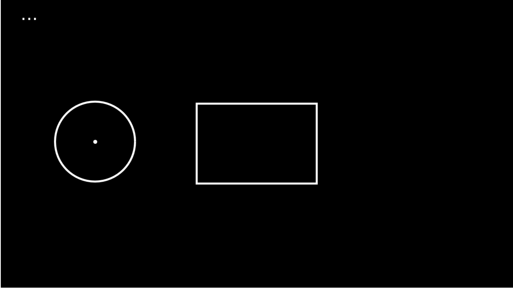
Simple enough. We set some styles, draw our shapes, then check for a collision, writing a status message based on what we found. Time for the fun stuff. Let's make our collision detection function.
function aabbCircleCollisionDetected(aabb, circle) {
// calculate stuff
// draw stuff
// aabb x axis
ctx.strokeStyle = "red";
drawLine(aabb.x - aabb.w/2, aabb.y, aabb.x + aabb.w / 2, aabb.y);
// aabb y axis
ctx.strokeStyle = "dodgerblue";
drawLine(aabb.x, aabb.y - aabb.h/2, aabb.x, aabb.y + aabb.h / 2);
// aabb center
ctx.fillStyle = 'rebeccapurple';
drawCircle(aabb.x, aabb.y, 5);
}
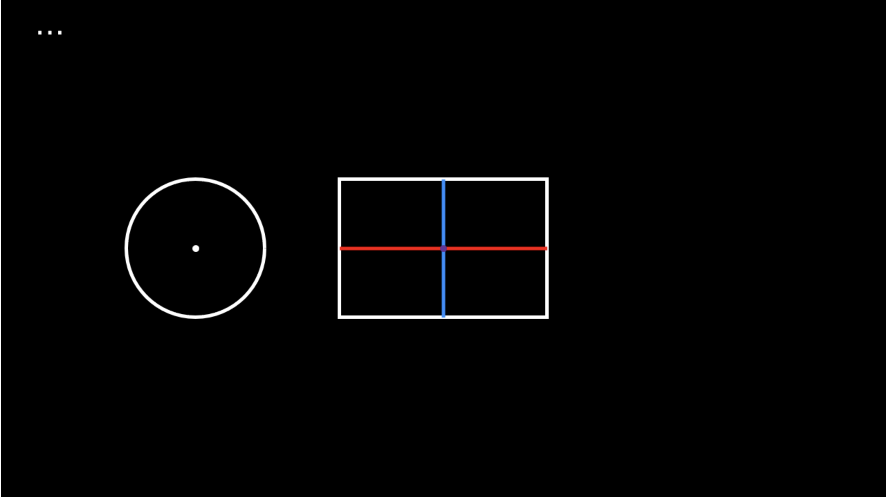
To find the nearest point on the AABB to our circle, we have to find where the circle lies in relation to the rectangle for each axis. I know that probably doesn't make a whole lot of sense, but it becomes a lot clearer when we see it in action.
function aabbCircleCollisionDetected(aabb, circle) {
// calculate stuff
// draw stuff
// ...
ctx.strokeStyle = 'limegreen';
ctx.setLineDash([5, 15]);
drawLine(aabb.x, aabb.y, circle.x, aabb.y);
drawLine(aabb.x, aabb.y, aabb.x, circle.y);
ctx.setLineDash([]);
ctx.fillStyle = "red";
drawCircle(circle.x, aabb.y, 10);
ctx.fillStyle = "dodgerblue";
drawCircle(aabb.x, circle.y, 10);
}
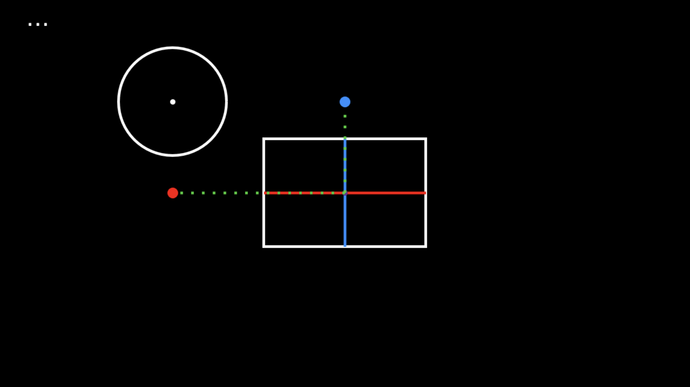
The red dot represents where the circle sits in relation to the rectangle's x axis. The blue dot represents where the circle sits in relation to the rectangle's y axis. We're just focusing on each axis separately, one at a time. You can see that since the rectangle is to the left of the rectangle (x axis), the red dot is to the left. Since the circle is above the circle, (y axis), the blue dot is above.
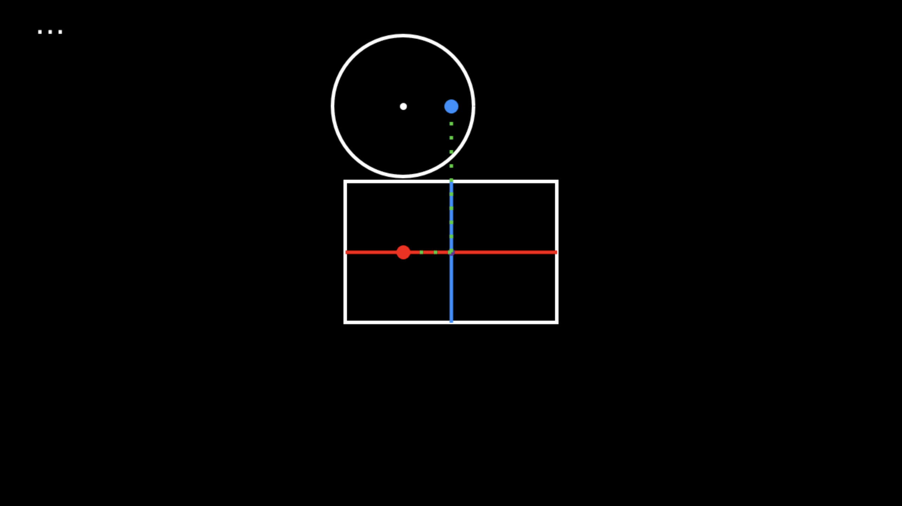Here you can see the red dot only extends partially across the rectangle, because the circle's x position sits within the rectangle on the x axis.
I hope it's now clear what we mean when we say we have to find where the circle lies in relation to the rectangle. What we eventually want to know is where the nearest point on the square is, and we do this by finding the nearest point on each axis, then using that to determine our final nearest point.
When our circle is far away from the rectangle on either axis, the
red/blue dot extends far beyond the boundaries of the rectangle. We're
interested in finding the nearest point on each axis on the
square, so we have to clamp these
points to the square's boundaries.
function aabbCircleCollisionDetected(aabb, circle) {
// calculate stuff
const nearestX = clamp(circle.x, aabb.x - aabb.w / 2, aabb.x + aabb.w / 2);
const nearestY = clamp(circle.y, aabb.y - aabb.h / 2, aabb.y + aabb.h / 2);
// draw stuff
// ...
ctx.fillStyle = "red";
drawCircle(nearestX, aabb.y, 10);
ctx.fillStyle = "dodgerblue";
drawCircle(aabb.x, nearestY, 10);
}
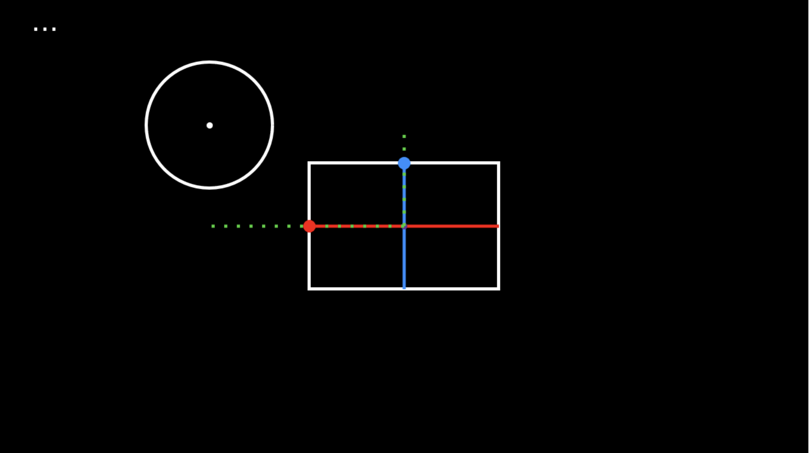
Now you can see that even though the circle is quite far away from the rectangle, the dots are not extending outside its boundaries.
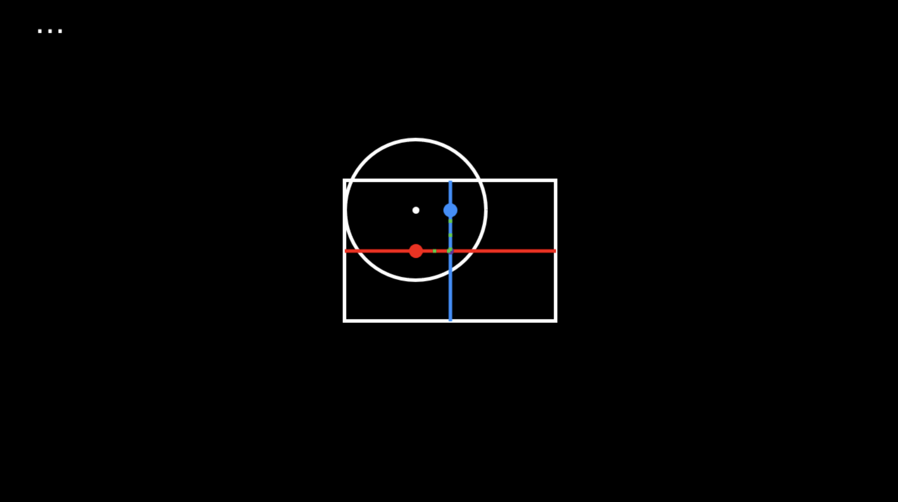
Since clamp just gives us back
the value we passed in if it falls within the given min-max range, you
can see that the red dot still sits partially along the rectangle's x
axis when the circle sits within the rectangle on that axis.
Now we have the closest point to the circle on the x and y axes, and that's all the information we need! The combination of these two things is our goal, the closest point on the rectangle to the circle.
function aabbCircleCollisionDetected(aabb, circle) {
// calculate stuff
const nearestX = clamp(circle.x, aabb.x - aabb.w / 2, aabb.x + aabb.w / 2);
const nearestY = clamp(circle.y, aabb.y - aabb.h / 2, aabb.y + aabb.h / 2);
// draw stuff
// ...
ctx.fillStyle = "yellow";
drawCircle(nearestX, nearestY, 10);
}
You can see that as we move our circle around the rectangle, the yellow circle follows around, showing us the closest point on the square. The final step of collision detection here is simple. We just need to find out how far that point is from our circle. If that distance is smaller than our circle's radius, it must be within our circle, and we have a collision!
function aabbCircleCollisionDetected(aabb, circle) {
// caclulate stuff
const nearestX = clamp(circle.x, aabb.x - aabb.w / 2, aabb.x + aabb.w / 2);
const nearestY = clamp(circle.y, aabb.y - aabb.h / 2, aabb.y + aabb.h / 2);
const collisionDetected = dist(circle.x, circle.y, nearestX, nearestY) <= circle.r;
// draw stuff
// ...
return collisionDetected;
}
Now we are successfully detecting collisions between an AABB and a circle! Armed with an understanding of this process, we're ready to tackle the problem with an OBB.
Our setup will be just about the same as with the AABB, with only a couple of variations.
// setup
// ...
const obb = {
x: 800,
y: 300,
w: 300,
h: 200,
rot: 0.5,
};
// ...
function animate() {
requestAnimationFrame(animate);
// set styles...
// draw background...
// draw shapes
ctx.save();
ctx.translate(obb.x, obb.y);
ctx.rotate(obb.rot);
ctx.strokeRect(-obb.w / 2, -obb.h / 2, obb.w, obb.h);
ctx.restore();
drawCircle(circle.x, circle.y, circle.r, false, true);
const collisionDetected = obbCircleCollisionDetected(obb, circle);
const text = collisionDetected ? "COLLISION DETECTED" : "...";
ctx.fillStyle = "white";
ctx.fillText(text, 50, 50);
}
// helper functions...
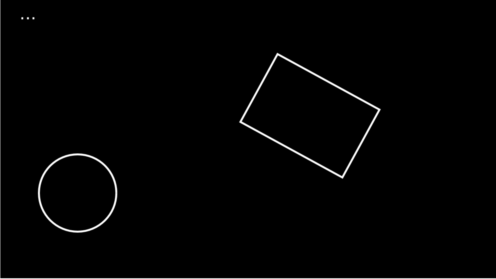
All of this should look familiar. Now we just have to work out the collision detection function.
At a high level, this will work exactly the same way as the AABB. We're going to find the nearest point on the rectangle to the circle and check the distance. And to do this, we're going to find the nearest point on the x axis and the nearest point on the y axis. BUT... These axes are not the axes of the canvas. They will instead be the local axes of the OBB. Again, this is a tough thing to conceptualize, so we're going to visualize each step of the process.
function obbCircleCollisionDetected(obb, circle) {
// calculate stuff
const localXAxis = [Math.cos(obb.rot), Math.sin(obb.rot)];
const localYAxis = [-Math.sin(obb.rot), Math.cos(obb.rot)];
// draw stuff
// local x axis
// local y axis
ctx.strokeStyle = "dodgerblue";
const drawableLocalYAxis = add(scale(localYAxis, obb.h / 2), obbPos);
drawLine(obb.x, obb.y, drawableLocalYAxis[0], drawableLocalYAxis[1]);
const reversedDrawableLocalYAxis = add(
scale(localYAxis, -obb.h / 2),
obbPos
);
drawLine(
obb.x,
obb.y,
reversedDrawableLocalYAxis[0],
reversedDrawableLocalYAxis[1]
);
// center of each shape
ctx.fillStyle = "white";
drawCircle(circle.x, circle.y, 5);
ctx.fillStyle = "rebeccapurple";
drawCircle(obb.x, obb.y, 5);
}
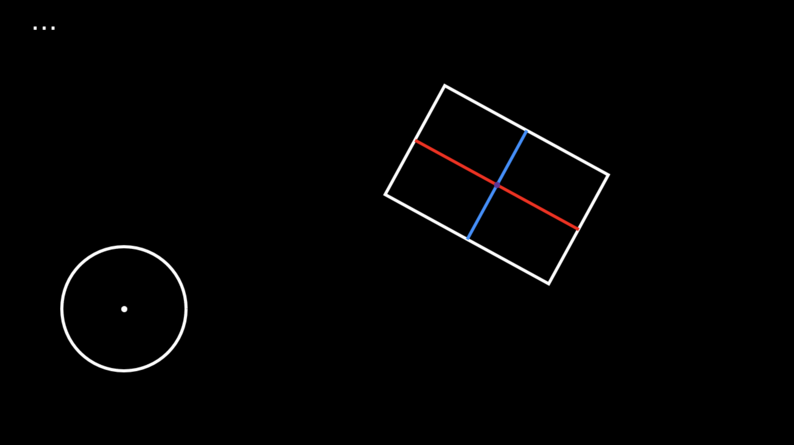
Here we can see what we mean by the rectangle's "local" axes!. Just as with our AABB, the red line is the rectangle's x axis and the blue line is the y axis.
The localXAxis and
localYAxis variables are unit
vectors, calculated much as we calculated the propulsion force
direction for our player. Now, you'll notice that when we're drawing
the representation of these axes on the screen, we're not drawing the
vectors as-is. This is for a couple of reasons. For one thing, a unit
vector is only going to be one pixel long, so it won't show up on the
screen unless we scale it. In this case, we're actually scaling it in
two directions so it takes up the whole width/height of the square.
For another, we have to move the origin of this vector to the middle
of the rectangle by adding the rectangle's position vector. As always,
a vector is just a magnitude and direction, and when we draw it as a
position on the canvas, we have to take its origin into account if we
want it to be drawn where we expect. You'll see this over and over as
we are drawing the vectors used in our calculations.
Now it's time to work out how to find the closest point on the rectangle on its local x and y axes. First, we'll get a vector pointing from the OBB to the circle. (Remember that we can do this with subtraction).
// calculate stuff
const obbPos = [obb.x, obb.y];
const circlePos = [circle.x, circle.y];
const D = subtract(circlePos, obbPos); // vector pointing from obb to circle
const localXAxis = [Math.cos(obb.rot), Math.sin(obb.rot)];
const localYAxis = [-Math.sin(obb.rot), Math.cos(obb.rot)];
// draw stuff
// draw axes...
// D
ctx.strokeStyle = "lime";
const drawableD = add(D, obbPos);
drawLine(obb.x, obb.y, drawableD[0], drawableD[1]);
// draw center of each shape...
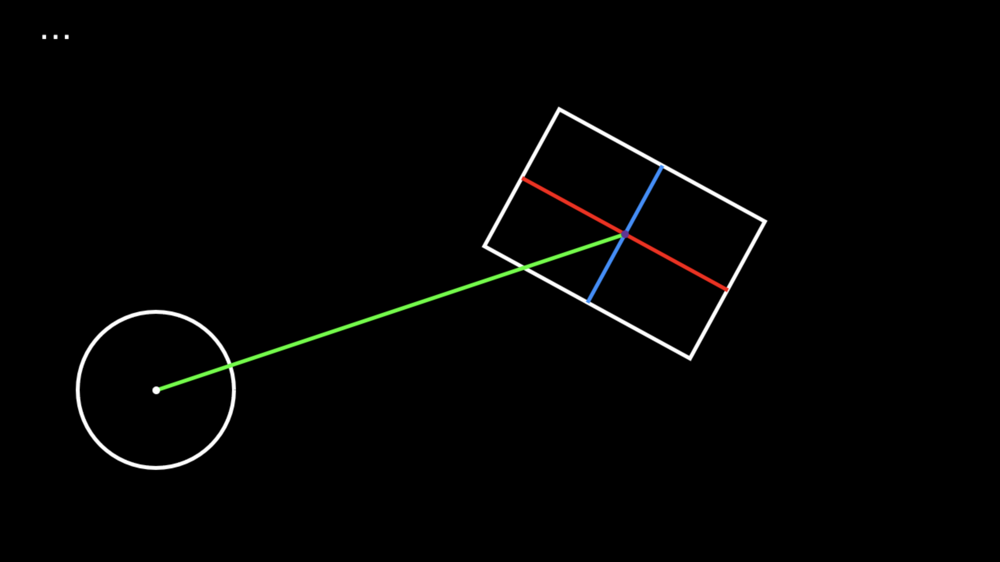
Having this vector allows us to perform a great trick. Using the dot
product of two vectors allows us to "project" one vector upon another.
The formula for this is
dot(vector1, vector2) / mag(vector2)Let's look at an illustration.
Imagine we are shining a light perpendicular to one of our vectors, (the blue one, in this illustration). The dot product of the two vectors represents the "shadow", if you will, of one vector, (the red), upon the other, (the blue), represented here by the dotted green line. This shadow illustration helps us conceptualize the concept, but to be more precise, the dot product gives us a scalar value that tells us the length along a local axis that is shared by both vectors. In this case, the local axis we're talking about is the blue vector, and the dotted green line is the length that is shared. This scalar value is known as the "scalar projection" of one vector upon another. We can use this scalar projection to create a vector if we choose, which is called the "vector projection". In this case, we would make a unit vector with the same direction as the blue vector, then we'd scale it by the dot product.
We talked about this "shared" length along a local axis, but what happens when we have an angle between two vectors that is greater than 90 degrees? We won't have any shared length. This can be a little confusing, but it's really nothing for us to get hung up on. In this case, it just happens that the dot product will be negative, (less than zero shared space, because one vector covers space along the local axis that the other does not), and we can continue to visualize the relationship between the vectors in the same way.
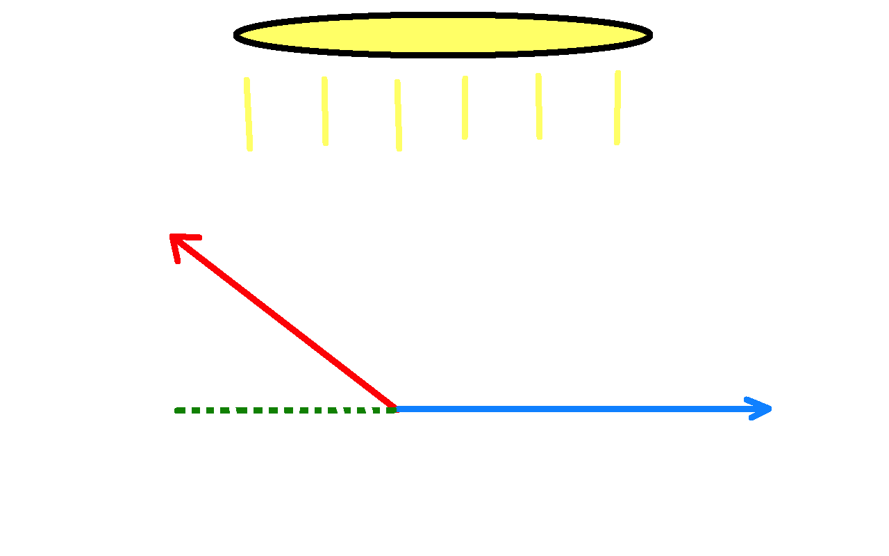We used some key phrasing a moment ago. We said the dot product gives us the length along a local axis that is shared by both vectors. Since we're working with the local axes of an OBB, that sounds like exactly what we need to find our nearest x and y points in the OBB's local space. Let's give this a shot.
// calculate stuff
// ...
const projX = dot(D, localXAxis);
const projY = dot(D, localYAxis);
// draw stuff
// local axes and D...
// projX
ctx.strokeStyle = "limegreen";
ctx.setLineDash([5, 15]);
const drawableProjX = add(obbPos, scale(localXAxis, projX));
drawLine(obb.x, obb.y, drawableProjX[0], drawableProjX[1]);
// projY
const drawableProjY = add(obbPos, scale(localYAxis, projY));
drawLine(obb.x, obb.y, drawableProjY[0], drawableProjY[1]);
ctx.setLineDash([]);
ctx.fillStyle = "red";
drawCircle(drawableProjX[0], drawableProjX[1], 10);
ctx.fillStyle = "dodgerblue";
drawCircle(drawableProjY[0], drawableProjY[1], 10);
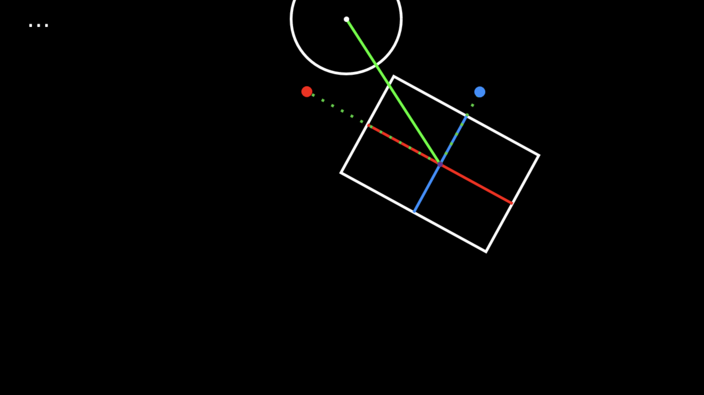
You can see how we've projected our D vector onto the local axes of the rectangle. You'll notice you don't see exactly the formula that we showed earlier for calculating scalar projection. We've left off the division part. Since the magnitude of the vector we're projecting onto is 1, it won't have any affect on our calculation. Comparing this illustration to our AABB's diagram at this stage should look very familiar:
We can now see how far along each local axis the circle is, just as we did with the AABB. And the next step is also the same. We need to clamp these values to the boundaries of the rectangle. We'll then have one extra step that we didn't have to take with the AABB. Since the axes are vectors, we'll have to scale them by our clamped scalar projections, (making a vector projection), to find the nearest x and y values in the rectangle's local space.
// calculate stuff
// previous calculations...
const clampedProjX = clamp(projX, -obb.w / 2, obb.w / 2);
const clampedProjY = clamp(projY, -obb.h / 2, obb.h / 2);
const localNearestX = scale(localXAxis, clampedProjX);
const localNearestY = scale(localYAxis, clampedProjY);
// draw stuff
// previous drawings, but replacing red/blue dots here...
// localNearestX
ctx.fillStyle = "red";
const drawableLocalNearestX = add(obbPos, localNearestX);
drawCircle(drawableLocalNearestX[0], drawableLocalNearestX[1], 10);
// localNearestY
ctx.fillStyle = "dodgerblue";
const drawableLocalNearestY = add(obbPos, localNearestY);
drawCircle(drawableLocalNearestY[0], drawableLocalNearestY[1], 10);
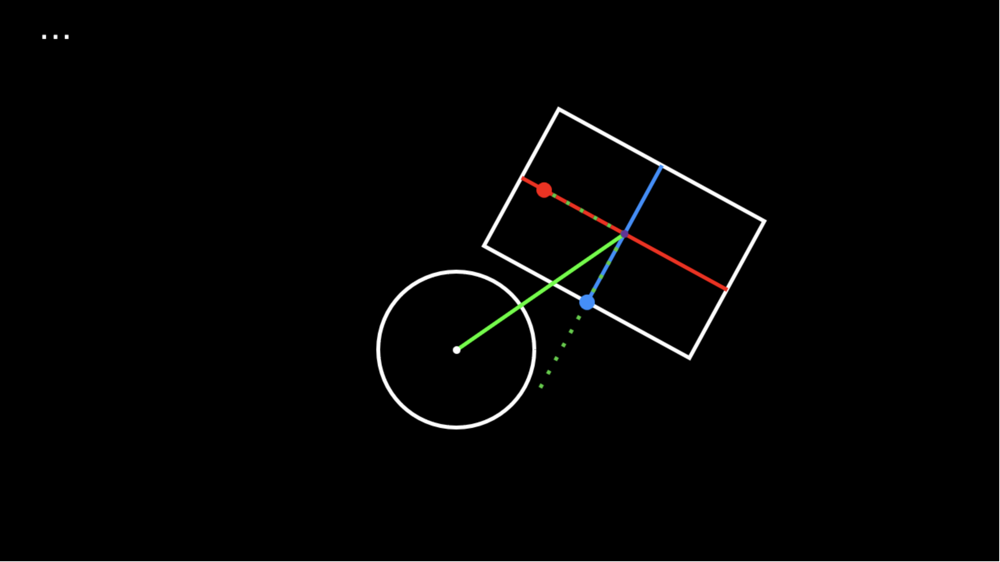
Again, very familiar looking. We have our x and y values in the rectangle's local space. We're almost done! Now, as before, we can find our closest point on the rectangle.
// calculate stuff
// previous calculations...
const localNearestPt = add(localNearestX, localNearestY);
const globalNearestPt = add(localNearestPt, obbPos);
We have been working with vectors without any respect to their origin, making all our calculations in a conceptual "local space" to the rectangle. To use our final result as a point on our canvas that we can get a distance measurement for, we have to move its origin to the rectangle. (We've been doing this already for every drawing we've done so that our lines and circles would show up on/around the rectangle instead of way off in the top left corner of the canvas.)
We can now add our nearest point to our rectangle for a final illustration and finalize our collision detection.
// calculate stuff
// previous calculations...
const collisionDetected =
dist(globalNearestPt[0], globalNearestPt[1], circle.x, circle.y) <=
circle.r;
// draw stuff
// previous drawings...
// nearest point
ctx.fillStyle = "yellow";
drawCircle(globalNearestPt[0], globalNearestPt[1], 10);
return collisionDetected;
It works! Now that we know how to do this, let's go add it to our game.
// Vec2.ts
static dot(v1: Vec2, v2: Vec2): number {
return v1.x * v2.x + v1.y * v2.y;
}
// utils.ts
function clamp(value: number, min: number, max: number): number {
return Math.max(min, Math.min(value, max));
}
export function obbCircleCollisionDetected(
obb: { pos: Vec2; rotation: number; width: number; height: number },
circle: { pos: Vec2; radius: number }
): boolean {
const D = Vec2.subtract(circle.pos, obb.pos); // vector pointing from obb to circle
const localXAxis = new Vec2(Math.cos(obb.rotation), Math.sin(obb.rotation));
const localYAxis = new Vec2(-Math.sin(obb.rotation), Math.cos(obb.rotation));
const projX = Vec2.dot(D, localXAxis);
const projY = Vec2.dot(D, localYAxis);
const clampedProjX = clamp(projX, -obb.width / 2, obb.width / 2);
const clampedProjY = clamp(projY, -obb.height / 2, obb.height / 2);
const localNearestX = Vec2.scale(localXAxis, clampedProjX);
const localNearestY = Vec2.scale(localYAxis, clampedProjY);
const localNearestPt = Vec2.add(localNearestX, localNearestY);
const globalNearestPt = Vec2.add(localNearestPt, obb.pos);
const collisionDetected =
Vec2.dist(globalNearestPt, circle.pos) <= circle.radius;
return collisionDetected;
}
We've transferred all the necessary functions from our proof of concept. Now we just need to check our player against our enemies and do something if a collision is found. For now, we'll just give ourselves a visual cue by turning the canvas red.
// Game.ts
// setup...
bgcolor: string = "black";
// detect collisions...
let collisionDetected = false;
for (let enemy of this.enemies) {
if (obbCircleCollisionDetected(this.player, enemy)) {
collisionDetected = true;
break;
}
}
if (collisionDetected) {
this.bgcolor = 'red';
// TODO destroy player, handle game over
} else {
this.bgcolor = 'black';
}
private draw(): void {
this.ctx.fillStyle = this.bgcolor;
this.ctx.fillRect(0, 0, this.ctx.canvas.width, this.ctx.canvas.height);
// this.ctx.clearRect(0, 0, this.ctx.canvas.width, this.ctx.canvas.height);
// ...
}
Great! We can now tell when an enemy has touched the player. We'll handle our "Game Over" scenario in the next section.